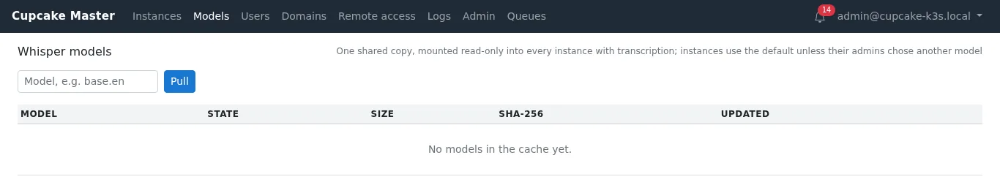

Models, in the top menu (staff only), lists the transcription models kept on the cluster for every instance, so they are downloaded once. One of them is the default that new instances use.

Pull downloads a model. Make this the default model changes the default; an instance whose owner chose a model keeps that choice. Download again repairs a model, and Remove from the cache deletes it.